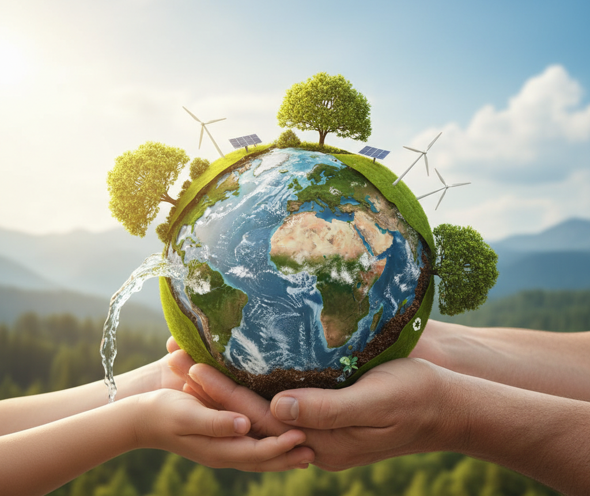

🌍 การอนุรักษ์โลก (Environmental Conservation)
ความหมาย
ความสำคัญ
วิธีการอนุรักษ์โลก
บทบาทของเรา
-
การอนุรักษ์โลก คือ การใช้ทรัพยากรธรรมชาติอย่างรู้คุณค่า มีการจัดการอย่างเหมาะสม
เพื่อรักษาสมดุลของสิ่งแวดล้อมให้คงอยู่ต่อไป และลดผลกระทบต่อโลกให้น้อยที่สุด
🌱 รักษาทรัพยากรธรรมชาติให้ใช้ได้อย่างยั่งยืน
🌊 ป้องกันมลพิษและการทำลายสิ่งแวดล้อม
🐘 คุ้มครองสัตว์ป่าและความหลากหลายทางชีวภาพ
👨👩👧 สร้างคุณภาพชีวิตที่ดีให้มนุษย์ในปัจจุบันและอนาคต
-
♻️ ด้านทรัพยากรธรรมชาติ
ใช้น้ำอย่างประหยัดปลูกต้นไม้ เพิ่มพื้นที่สีเขียวลดการใช้ถุงพลาสติก เลือกใช้วัสดุที่ย่อยสลายได้
🌡️ ด้านพลังงานปิดไฟเมื่อไม่ใช้ใช้พลังงานทดแทน
เช่น พลังงานแสงอาทิตย์ ลม น้ำลดการใช้รถยนต์ส่วนตัว หันมาใช้ขนส่งสาธารณะ
🚯 ด้านการจัดการขยะ
คัดแยกขยะเป็นประเภท นำวัสดุกลับมาใช้ซ้ำ (Reuse) รีไซเคิลขยะ (Recycle)
🐾 ด้านสิ่งแวดล้อมและสัตว์
ไม่ตัดไม้ทำลายป่า รักษาแหล่งน้ำไม่ทิ้งสารพิษ อนุรักษ์พันธุ์สัตว์ที่ใกล้สูญพันธุ์
-
เริ่มจาก พฤติกรรมเล็กๆ ในชีวิตประจำวัน เช่น ปิดไฟ ใช้ขวดน้ำพกเองร่วมมือกับชุมชนในการรักษา
ความสะอาดและสิ่งแวดล้อมสนับสนุนผลิตภัณฑ์และกิจกรรมที่เป็นมิตรต่อสิ่งแวดล้อม